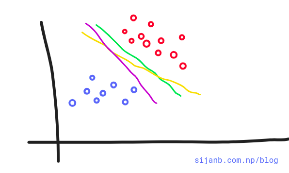
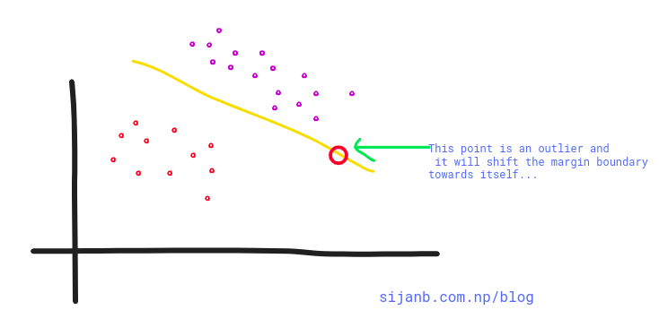

Support vector machine (SVM) is a supervised machine learning algorithm which is considered
effective tool for both classification and regression problem.
In a simple word, SVM tries to find a linearly separable hyperplane in order to separate
members of one class from another. If SVM can not find the hyperplane for a given data set,
it applies non-linear mapping to the training data and transform them to higher dimension
where it searches for the optimal hyperplane. The SVM algorithm uses support vectors and
margins in order to draw these hyperplanes in the training data.
Since it has ability to understand the complex relation in input data by applying
nonlinear mapping, it has high accuracy compare to other supervised classification algorithms
(kNN, NCC..)
People have been using SVM for different applications like : text data classification,
image data(handwritten) recognition and more.
Intuition:
Let us see a linearly separable problem as shown in the diagram below.

In the given diagram, we can draw infinite lines that can separate data into two different
classes.
Can you decide Which of the lines (pink, yellow, green) better suits our problem? If you look
closely, the green line is close to red dots and any minor change in data point may caues
this point to fall into other class.
On the other hand, Pink line is close to blue dots and similarly, a minor twist on data are
prone to change the class of new point to other side and may misclassified.
But, the yellow line looks more stable, in the sense, it is far from data points on either
side and not susceptible to the small changes in data observations.
Support vector machines help us to make a decision on this problem. If you think 'yellow' line
in the figure is the optimal hyperplane for this problem, we can take this as an intuition that
an optimal choice from the number of choices of hyperplanes is the one which is farthest
from our training data points.
We can compute the perpendicular distances from all our training points to all possible
hyperplanes and choose the one which has largest minimum distance to the training examples.
The minimum distance between hyperplane and the observation point is called margin.

In summary, SVMs maximize the margin around our separating hyperplane. And, The idea is
to draw a margin of some width around the separating hyperplane, up to the nearest point.
The training data that falls exactly on the boundaries of the margin are called
the support vectors. If these points shifted on any direction, they also influence the
hyperplanes passing through the margin points and they also shifted. It is important
to notice that support vectors are critical data points on our training set since they
are the one defining margin boundaries.
It is important to note that the complexity of SVM is characterized by the number of
support vectors, rather than the dimension of the feature space.
That is the reason SVM has a comparatively less tendency to overfit.
Support vectors "support the plane" and are hence called Support Vectors.¶
Upto now, we are trying to find the hard-margin for our hyperplane. But, as shown
in the diagram below, a single point can have high influence on our boundary.
So hard margin SVM are sensitive to outliers, giving overfitted model.

What about we relax our hard margin condition? where, a small amount of data points are allowed
to cross the margins/boundaries .i.e data points can be on incorrect side as well.
This approach is called soft-margin. Soft in the sense that few data points can violate the
margin condition.
The softness is measured by slack variable; which control the position of training data points
relative to the margins and our hyperplane.
The ultimate goal is, our SVM tries to maximize the soft margin.